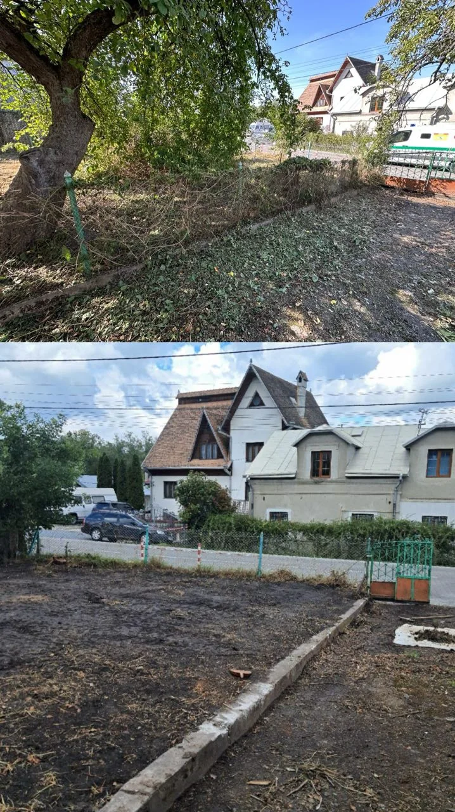

🌿
Розчищення ділянок
Очищення території від чагарників, самосіву та зайвої рослинності.

Розчищення ділянок, корчування пнів, порізка дерев, покіс трави, демонтаж та послуги спецтехніки.
Очищення території від чагарників, самосіву та зайвої рослинності.
Планування рельєфу та підготовка ділянки до подальших робіт.
Видалення пнів і кореневої системи із застосуванням спецтехніки.
Безпечна порізка дерев та прибирання залишків після робіт.
Порізка, рубання та акуратне складання дров на території.
Косіння трави на присадибних, дачних і комерційних ділянках.
Демонтаж старих будівель, сараїв, гаражів та інших конструкцій.
Завантаження і вивезення будівельних відходів та непотребу.
Техніка для виконання робіт різного масштабу та складності.



Зателефонуйте Ярославу або напишіть у Viber. Працюємо у Львові та в радіусі 15 км.